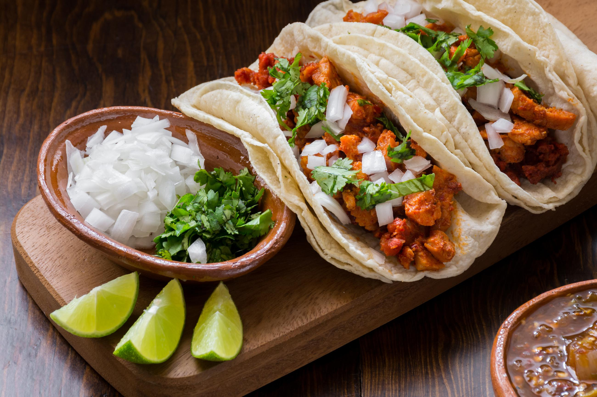

Tacos

Prep: 15 min · Cook: 15 min · Servings: 4
Zesty Chicken Tacos
These Zesty Chicken Tacos are packed with juicy, seasoned chicken, fresh vegetables, and a splash of lime juice. Wrapped in warm tortillas and topped with creamy avocado and cilantro, they make a quick, colorful, and delicious weeknight dinner.
Ingredients
- 1 lb boneless, skinless chicken breasts
- 8 small corn or flour tortillas
- 2 tablespoons olive oil
- 1 teaspoon chili powder
- 1 teaspoon ground cumin
- 1/2 teaspoon paprika
- 1/2 teaspoon garlic powder
- 1/2 teaspoon salt
- 1/4 teaspoon black pepper
- 1 cup shredded lettuce
- 1 medium tomato, diced
- 1 avocado, sliced
- 1/4 cup red onion, finely diced
- 1/4 cup fresh cilantro, chopped
- 1 lime, cut into wedges
- 1/2 cup sour cream (optional)
- 1/2 cup salsa (optional)
Steps
- Prepping Chicken: Pat the chicken breasts dry with paper towels and slice them into small, bite-sized pieces. In a small bowl, combine the chili powder, cumin, paprika, garlic powder, salt, and black pepper. Place the chicken in a mixing bowl, drizzle with 1 tablespoon of olive oil, and toss with the spice mixture until evenly coated.
- Cooking the Chicken: Heat the remaining tablespoon of olive oil in a large skillet over medium-high heat. Add the seasoned chicken and cook for 6–8 minutes, stirring occasionally, until golden brown and cooked through. The internal temperature should reach 165°F (74°C). Remove the chicken from the heat and squeeze a little fresh lime juice over it.
- Prepping Tortillas: Warm the tortillas in a dry skillet over medium heat for approximately 20–30 seconds per side.
- Assembling Tacos: Place a portion of cooked chicken in the center of each tortilla. Top with shredded lettuce, diced tomatoes, avocado slices, red onion, and fresh cilantro. Add sour cream or salsa if desired. Serve immediately with lime wedges on the side.
Home